Capítulo 3
Insomnio… Homero…[1]
«La voz de la verdad celestial
contra la verdad terrenal…»
M. Tsvetaeva
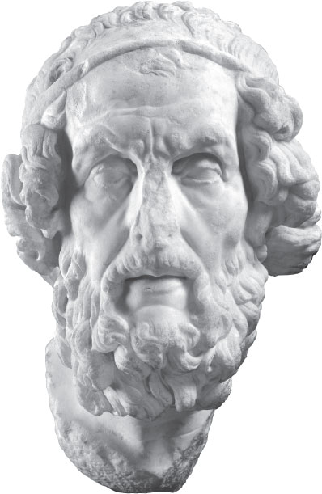
Homero vivió nueve siglos antes de nuestra era[2], y no sabemos cómo era el mundo en aquel entonces, ni aquel lugar que hoy llamamos Grecia Antigua, o clásica. Todos los olores y los colores eran más densos, más penetrantes. Al alzar el dedo, el hombre entraba de lleno en el cielo, pues para él este era tan material como animado. Grecia olía a mar, a piedra, a lana de oveja, a aceitunas, a la sangre de guerras interminables. Pero no sabemos, no podemos imaginarnos los cuadros de la vida de aquella época a la que se suele llamar «período homérico», es decir, los siglos IX y VIII a. C. ¿No resulta extraño? ¿Que a todo un período histórico se le dé, tres milenios después, el nombre de un poeta? Ha corrido mucha agua bajo el puente y los acontecimientos se han desdibujado, pero su nombre ha quedado como la definición de todo un período, sellado por dos poemas: la Ilíada (sobre la guerra de los aqueos contra Ilión) y la Odisea (sobre el regreso a Ítaca del guerrero Odiseo tras la Guerra de Troya).
Todos los sucesos descritos en los poemas ocurrieron aproximadamente en el año 1200 a. C., es decir, trescientos años antes de la vida del poeta, y fueron puestos por escrito en el siglo VI a. C., o sea, trescientos años después de su muerte. Para el siglo VI a. C. el mundo había cambiado de manera increíble, hasta volverse irreconocible. Ya el principal acontecimiento panhelénico —las Olimpiadas— establecía cada cuatro años la «tregua sagrada» y era el «punto de verdad» y de unidad durante el breve instante de unión de todos los helenos.
Pero en el siglo IX a. C. nada de esto existía. Homero, según testimonio de los investigadores contemporáneos (Gaspárov, Grecia, p. 17, Moscú, 2004, y muchos otros), pertenecía al número de los cantores errantes: los aedos. Andaban de ciudad en ciudad, de caudillo en caudillo y, al acompañamiento de la cítara de cuerdas, contaban «las hazañas de los días ya lejanos, las tradiciones de la vetusta antigüedad».
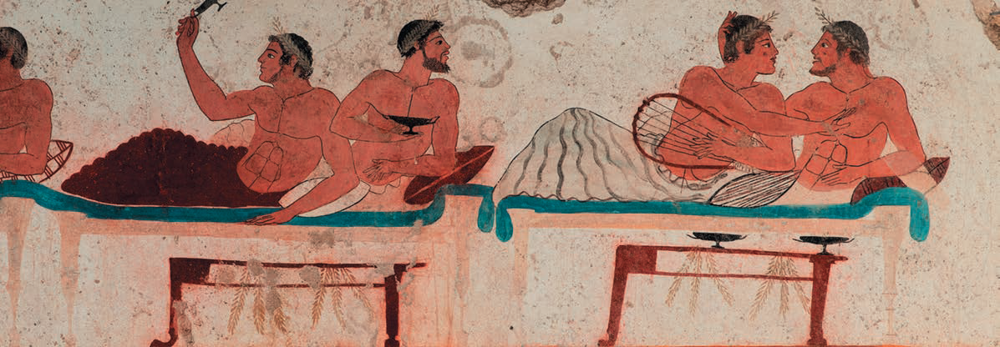
Así, uno de los aedos, llamado Homero, con cuyo nombre se vincula todo un período cultural, permanece hasta nuestro tiempo como aquello que se denomina «modelo» para la poesía y los poetas europeos. Cualquier poeta sueña con que lo citen, lo recuerden largo tiempo, lo estudien los historiadores y los filólogos, y que la fama de cien bocas haga de su nombre un sinónimo de verdad, de fe, por muchos milagros que ocurran con sus héroes. Cualquier poeta quiere crear su universo, sus héroes, es decir, asemejarse al Demiurgo. Precisamente por eso Anna Ajmátova pronunció: «El poeta siempre tiene razón».
Una época entera se denomina homérica. Igual que el umbral de los siglos XIII y XIV de Italia es llamado época de Dante y de Giotto, o el umbral de los siglos XVI–XVII en Inglaterra, shakespeariano. Estos nombres son frontera, punto de referencia, siempre comienzo de una nueva época en la cultura, creación de una lengua nueva, de formas jamás vistas hasta entonces del arte de la conciencia, descubrimiento de un mundo nuevo para los contemporáneos y los descendientes.
En los textos de Homero el cosmos mitológico se nos muestra en toda la plenitud de la vida de los dioses y de los héroes, de su conducta, del vínculo con los acontecimientos históricos y con los detalles cotidianos del diario vivir.
La medida de seis pies, el hexámetro, hace el espacio del poema solemne y espacioso. Escuchad lo que dice el héroe troyano Héctor a su esposa Andrómaca antes del combate con Aquiles[3]. Él lo sabe todo, lo que sucederá. Casandra es su hermana de sangre:
Héctor marcha al duelo con Aquiles, «semejante a los dioses», sabiendo tanto de su propia derrota como de la muerte de Troya, afligido por la muerte de su linaje, de su pueblo, por la esclavitud de la esposa amada. Es claro: la visión fue concedida al gran héroe de Troya y a su hermana Casandra. La retórica heroico-patética de la despedida y el llanto la trasladó a la pintura no un contemporáneo de Homero, sino un artista del gran estilo: Louis David, el clasicismo de comienzos del siglo XIX.[4]
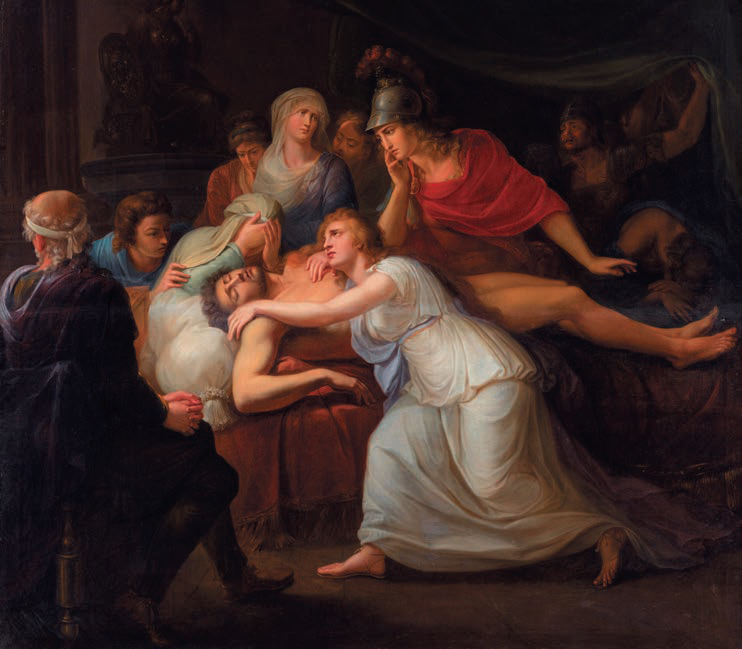
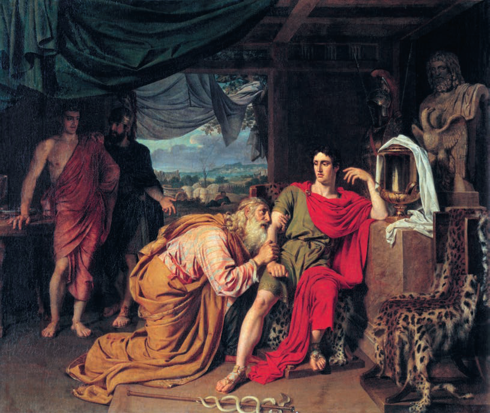
Los dioses no perdonan a los mortales que poseen el don propio de los inmortales: el saber de «comienzos y fines». Pero el propio Homero estaba dotado del don divino de la luz a través de las tinieblas, del conocimiento supremo: la visión, de la que solo están dotados los profetas y los poetas. Quizá por eso la leyenda lo dota de ceguera para los confines cercanos, para lo que está ante las narices, pero, en cambio, de visión de los mundos de lo alto y de los que fueron. Ve los acontecimientos de hace trescientos años, para abrir horizontes hacia milenios por delante. Y las pruebas de ello son muchas, hasta llegar a la arqueología del siglo XX.
¿Qué sabemos de Homero? Casi nada y muchísimo. Fue, según se afirma, un cantor ciego y pobre, errante: un aedo. «Si me dais dinero, cantaré, alfareros, os cantaré una canción». No se sabe dónde nació. Pero ya en aquellos tiempos remotos Homero era tan célebre que «siete ciudades se disputan la sabia raíz de Homero: Esmirna, Quíos, Colofón, Salamina, Pilos, Argos, Atenas». Su propia personalidad, en nuestra percepción, es la conjunción de los enigmas de la historia mitológica, documental y aun cotidiana.
Hasta hace poco se mostraba en la Acrópolis de Atenas el primer olivo, nacido del golpe de lanza de Atenea durante su disputa con Poseidón. Así como el pozo, la fuente surgida del golpe del tridente de Poseidón en esa misma disputa. En la Acrópolis se guardaba asimismo la nave en la que Teseo navegó a Creta. La genealogía de Licurgo remontaba a Heracles, etc. El arquetipo fue siempre la mitología: punto de referencia incuestionable. Del arquetipo del propio Homero, más abajo. El mundo descrito en los himnos y en ambos poemas se volvió, para contemporáneos y descendientes, indudablemente histórico solo gracias al «cantor igual a los dioses».
Si se elige entre los hechos documentales y los poéticos, vence siempre no nuestra elección, sino la elección del tiempo. El tiempo se imprime en la memoria con las imágenes del documento hecho poesía.
Ya en tiempos del emperador Augusto (siglo I d. C.), cierto Dión Crisóstomo[5], filósofo y orador errante, recorriendo las ciudades, refutaba la autenticidad de los hechos de los poemas. «Mis amigos troyanos —arengaba Dión a los habitantes de Troya—, al hombre es fácil engañarlo… Homero, con sus relatos sobre la Guerra de Troya, engañó a la humanidad durante casi mil años». Y luego seguían argumentos harto razonables en contra de la historia homérica. Él demuestra con hechos que no hubo victoria de los aqueos sobre los habitantes de Ilión, que precisamente los troyanos obtuvieron la victoria y se convirtieron en el futuro del mundo antiguo. «Pasa muy poco tiempo —dice Dión— y vemos que el troyano Eneas, con sus amigos, conquista Italia, el troyano Heleno, el Epiro, y el troyano Anténor, Venecia[6]. …Y esto no es invención: en todos estos lugares se alzan ciudades fundadas, según la tradición, por héroes troyanos, y entre estas ciudades, la fundada por los descendientes de Eneas: Roma».
Y más de dos mil años después, en uno de los versos del poeta de fines del siglo XX Iósif Brodski, su Odiseo dice: «No recuerdo cómo acabó la guerra, / ni cuántos años tienes ya, no recuerdo. / Crece, mi Telémaco, crece. / Solo los dioses saben si volveremos a vernos». La causa que engendró el verso de Brodski es profundamente personal, pero el poeta, que afirmaba estar compuesto en un noventa por ciento de antigüedad, revisa su vida a través del mito, como testigo presencial.
¿Quién recuerda a Dión Crisóstomo con sus argumentos demoledores? Nadie… Vence el ciego anónimo. «El poeta siempre tiene razón». Añadamos: un poeta especial, cuyo misterio de inmortalidad no se descifra, como tampoco el ineludible misterio de su anonimato.
Contemporáneo y rival de Homero fue el poeta Hesíodo, campesino del lugarejo de Ascra. También él fue un cantor-aedo. Sus enseñanzas poéticas tenían carácter práctico: cómo administrar la hacienda, cómo sembrar, etc. Su poema más conocido se titula «Trabajos y días». En la ciudad de Calcis, Hesíodo desafió a Homero a una competición poética. Hesíodo comenzó:
Hesíodo planteaba el tema de significación práctica. Nada de fantasías, según él. Homero respondió en su estilo y replicó sobre lo que no será:
De modo que, señores, hay que cantar sobre lo imperecedero y lo eterno. Cómo sembrar la tierra también es importante, pero a modo de manual de agricultura. He ahí el siglo IX antes de la nueva era: la disputa de dos poetas sobre la esencia y las tareas de la poesía. (Añadamos entre paréntesis que esta disputa no terminará jamás.)
Hesíodo pregunta de nuevo:
Homero responde con afirmación de vida y con enseñanza:
Y aún más:
He ahí el deseo para todos los tiempos; por decirlo así, un brindis de banquete, un aforismo para siempre.
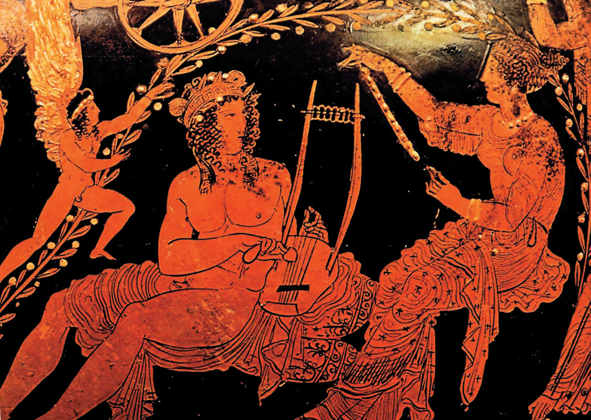
Del diálogo de Hesíodo con Homero es evidente asimismo cuán famoso era Homero. Hesíodo, el hermano mayor, lo llama «igual a los dioses», es decir, prácticamente un héroe, un inmortal. El tiempo siempre sabe de sus inmortales; la cuestión es solo cómo se porta con ellos. Y como se porte, será siempre de modo inadecuado.
Quedará como misterio para siempre por qué Lev Nikoláievich Tolstói fue excomulgado de la Iglesia por el propio Juan de Kronstadt, y no por cualquier ignorante[7]. Por qué Mozart fue enterrado en una fosa común[8] teniendo protectores y ricos mecenas. Por qué Andréi Platonov, el mejor, el único genial escritor soviético (esto los contemporáneos lo sabían bien), barría, siendo conserje, precisamente aquel patio donde se alzaba el Instituto Literario[9]. ¿Y Shakespeare? Se desconoce quién es, dónde nació y dónde está enterrado.[10] Intentad escribir la biografía de Diego Velázquez o de Cervantes. No lo conseguiréis. Todos ellos se nos escabullirán.
Volvamos, sin embargo, al certamen de Homero y de Hesíodo. Los jueces declararon vencedor a Hesíodo, «porque Homero canta la guerra, y Hesíodo el trabajo pacífico». Pero para la cultura universal, que todavía no ha vivido un solo día sin Homero, Hesíodo es solo su contemporáneo.
Cuentan que Homero sintió una gran nostalgia, murió de pena y fue enterrado en la isla de Íos. Allí mostraban su tumba.
Y Homero tuvo también su arquetipo. Se llamaba Orfeo: cantor tracio, creador de la música y de la versificación. Con su nombre está vinculada la idea de unir la palabra con el acompañamiento musical de cuerdas. Podemos llamar a Orfeo fundador de la lírica de bardos. Fue un bardo cuyo genio universal afinaba el mundo en la absoluta armonía. Lo escuchaban las plantas, las piedras, el agua; con su canto podía sosegar a Cerbero, que guardaba las entradas del Hades; arrancaba lágrimas de entusiasmo a las erinias y a la diosa del reino subterráneo, Perséfone. Si fue hijo de Apolo o de Dioniso es gran disputa. Más bien de Apolo, cuya sensible cítara afinaba en tono armónico la música de las esferas, es decir, era fundamento de la armonía cósmica, y no solo terrenal. Emparenta a Apolo con Orfeo otro fascinante y significativo personaje, creador del instrumento musical común para ambos: la cítara. Es Hermes. En su infancia de bebé cazó una tortuga, y su caparazón, misterioso con los enigmáticos signos de la creación primigenia, se convirtió en la base del resonador musical. Sobre el caparazón tensó venas de vaca, y así quedó espléndida la cítara de siete cuerdas.[11] Hermes es, por supuesto, el protector de los geniales citaredos. Precisamente él fue el conductor de Orfeo al Hades, de donde el poeta, inconsolable por el amor perdido, quería recuperar a su novia, la ninfa Eurídice. Ay: las novias no vuelven de allá; los poetas, fieles a su sombra, lloran a sus Eurídices.
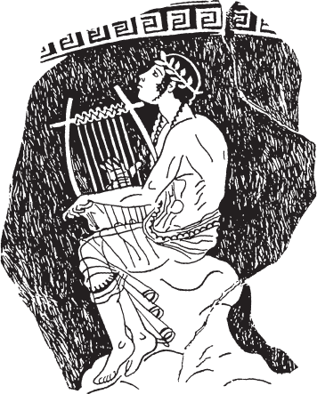
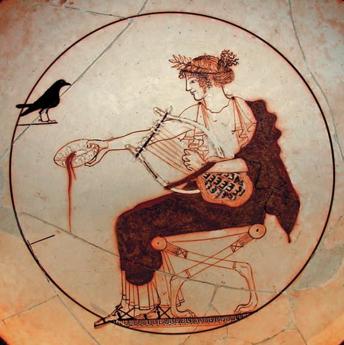
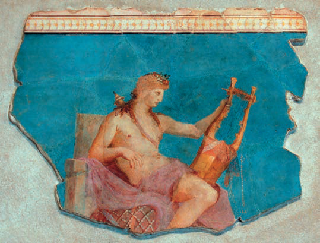
Para quienes han arrancado los últimos jirones
del velo (¡ni labios, ni mejillas!..)
Oh, ¿no es acaso exceso de atribuciones
Orfeo, descendiendo al Hades?
Marina Tsvetaeva
Orfeo es uno de los héroes de la expedición de los argonautas a la Cólquida por el vellocino de oro. Con su canto salvó la vida a sus amigos, hechizando con el canto a las propias sirenas. El fin de Orfeo, como el de todo poeta genial, fue trágico. Lo despedazaron las salvajes compañeras de Dioniso: las ménades. No están claras las causas de su acto. Aunque estas causas pueden ser las mismas que hoy, cuando los fanáticos de los cantores y de los actores de cine están también dispuestos a despedazarlos en pedazos de puro amor salvaje y entusiasmo. Se ha notado desde hace mucho que las pasiones humanas cambian poco, tanto en esencia como en manifestaciones. Al poeta se le podía despedazar en jirones, puede ser víctima de la furia ajena, pero es imposible obligar a callar su voz. La cabeza de Orfeo flotaba junto a la cítara. Él (ya eterno) profetizaba. «No, todo yo no moriré: / el alma en la lira amada mi polvo sobrevivirá, y la corrupción eludirá»: palabras de Pushkin sobre la inmortalidad de los orfeos, sobre el alma en la lira amada. La imagen de Homero, ¿no es acaso eco de Orfeo? He ahí lo primigenio y principal en el legado de la Antigüedad a la cultura. Lo originario desde Homero: la escucha, el eco sonoro. La escucha es ley, idea, medida del mundo griego. La escucha nos incluye en el círculo de la acústica como comprensión. La escucha es comprensión mutua. La escucha como comprensión, unión a través de la comprensión. ¿No está ahí acaso la superagenda oculta de todo el arte griego? ¿Y del teatro, y de la escultura, y, por supuesto, de los diálogos del banquete, cuyos temas eran propuestos por las imágenes de las vasijas de banquete (ánforas, dibujos en las vasijas)? ¿Y no está ahí la base de la democracia de la polis? Pues comprender es volverse igual, hablar la misma lengua. El ejemplo inverso: la Torre de Babel, el efecto de la inescucha mutua, del caos y de la desigualdad, de lo cual contaremos más detalladamente en otra parte de nuestro libro. La órbita de eco de Orfeo es inmensa. Lo atiende toda criatura: los Cerberos, las fieras, las flores, las aves… «A todo sonido, su propia resonancia en el aire vacío…» La eco-sonoridad de la poesía está en la escucha recíproca. Y esta ley nació, como se dijo, en las entrañas profundas de la historia mitológica antigua, con Orfeo-Homero.
Orfeo no fue feliz. La felicidad personal no es para los poetas. Y su muerte fue trágica. A semejanza de Orfeo, ¿acaso el poeta Dante, guiado por su Hermes, Virgilio, no descendía al Infierno? ¿Y no era la sombra de la donna Beatrice el eco tardío, el estribillo de Eurídice?
En la mitología antigua Orfeo tiene un doble-antípoda. Es Tamiris el citaredo. Era pariente de Orfeo en algún grado y vivió cuando nacieron la música-poesía y las musas de los poetas. De Tamiris corrían leyendas como de músico y, además, bello. Pero Tamiris era arrogante y vanidoso, y desafió a competición a las propias musas. En su sed de victoria y de poseerlas, Tamiris perdió. Perdió la voz, el don de citaredo y la vista. Orfeo profetizaba incluso en la muerte. A Tamiris, en cambio, se le privó de su don aún en vida. Los griegos sentían finamente la frontera de las normas éticas. Sabían: el solo talento no basta. ¿Qué añadir a esto hoy? Sófocles escribió sobre Tamiris una tragedia y él mismo representó en ella el papel principal.[12] Lamentablemente, esta obra de Sófocles no ha llegado hasta nosotros.

Las excavaciones realizadas por Heinrich Schliemann en los años setenta y ochenta del siglo XIX en la colina que se consideraba la antigua Troya, y en Micenas, fueron un descubrimiento científico y una prueba documental de la veracidad de los poemas de Homero. La casa de Schliemann en Atenas está decorada con citas de los poemas. Las citas, con mosaico de oro, decoran el techo, los muros del gabinete, del cuarto de los niños, etc. Desde el punto de vista de la psicología, semejante insistencia se asimila con menos frecuencia; más a menudo se rechaza, lo que quizá ocurrió con los hijos de Schliemann.
Todas las dudas (y no son pocas, incluidas las excavaciones) retroceden ante la evidencia de la inagotabilidad de la enciclopedia de la Antigüedad en la cultura universal.
La imagen del cantor y del poeta de toda la tradición europea y rusa se forma evidentemente bajo la influencia del código complejo de la imagen del cantor-aedo de la temprana cultura antigua. Más aún: el anonimato y la ausencia de biografía de hechos son ya ejemplo de la biografía del poeta. Solo se subrayan dos rasgos: el tema de las peregrinaciones (la carencia de hogar) y la actitud ante la vocación.
La matriz de Orfeo y de Homero, a través de todos los siglos y milenios hasta el día de hoy, ha conservado la adhesión únicamente al propio don. En este sentido todos los poetas son hijos del mito más que de su familia.
De la biografía del poeta citaredo Arión, realmente vivido en el siglo VII a. C., quedó el relato de cómo cayó prisionero de los piratas del mar. Les pidió clemencia: cantar antes de morir. Terminada la canción, Arión se arrojó al mar, pero lo salvó y lo llevó a la orilla el sagrado Delfín de Apolo. El eco del siglo XIX, Pushkin, responde con el poema «Arión» («Éramos muchos en la barca…»): «Canto las canciones de siempre, y mi pobre vestido / lo seco al sol bajo la roca». El emerger del abismo y la señal de que vuelves a vivir: la canción. ¿Necesita el poeta, errante y viajero, una biografía? ¿Qué puede explicar en el genio de Shakespeare el hecho de si fue hijo de un carnicero de Stratford o de un lord Redcliffe[13]? Shakespeare repitió la biografía ideal orfico-homérica o, más bien, su ausencia. Se encarnó y disolvió por entero y sin residuo en su poesía. El inglés de la época isabelina, cuyas traducciones de obras a todas las lenguas del mundo están en todas las librerías y cuyas piezas se representan sin interrupción en todos los teatros del mundo. Es el anónimo misterioso.
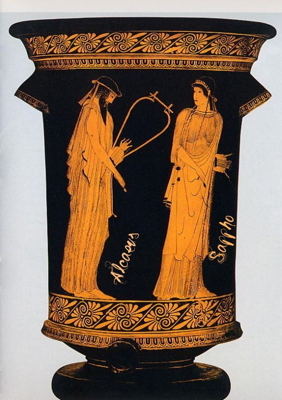
En la peregrinación poética de la tradición homérica no solo hay carencia de hogar en vida, sino «carencia de hogar», «carencia de espacio» póstumas. Claridad ante la lengua y el tiempo de todo lo existente. Asombro del lector contemporáneo: en el mostrador del quiosco de libros de la Duma del Estado, entre la literatura económica y política, la edición de regalo, ilustrada, del año 2006, de la «Odisea» de Homero.
Los bardos jamás desaparecieron de la cultura, salvo en los episodios de total falta de libertad de la sociedad, es decir, el totalitarismo. Pues el errante es libre. Cruza sin esfuerzo las fronteras y encuentra oyentes en todas partes. El errante, poeta y filósofo del siglo XII, Francisco de Asís[14], que cantaba bajo la nieve extrañas oraciones, hallaba respuesta y comprensión en las almas de las aves, como Orfeo. El vagabundo loco fue canonizado, escribió el libro «Las florecillas», y a sus seguidores se les llama franciscanos.
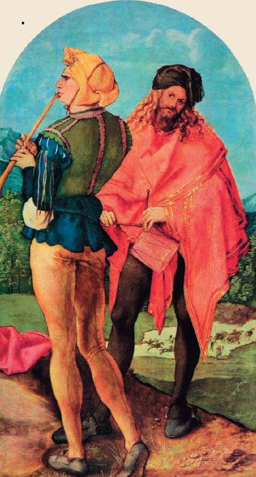
En los «Comentarios a la guerra de las Galias» (siglo I a. C.) César describía a los bardos celtas[15], que pertenecían a la casta sacerdotal espiritual de los druidas. Transmitían los relatos sobre la historia y las hazañas militares, sobre el valor de los antepasados. La memoria histórica vive en su canto; los contemporáneos los consideran portadores de la verdad. Igual que los antiguos poetas escandinavos, los escaldos. El origen de la poesía escáldica no tiene una respuesta unívoca, pero los vínculos celtas están desde hace tiempo fuera de toda duda. «En las heridas ardían / los resplandores del combate; / los aguijones de hierro / atentaban contra la vida; / las gotas de la contienda siseaban / en el campo de las lanzas; / torrentes de flechas / manaban sobre el Ströd…»: así escribía el bardo Eivindr el Destrozador[16]. Los versos-vísur de Eivindr resonaron, con eco lejano, en la poesía del escaldo ruso del siglo XX Velimir Jlébnikov.
En la tradición del norte hay un héroe que, semejante a Prometeo o a Heracles de la antigüedad griega, puede llamarse héroe y dios. Su nombre: Odín. Con él se vincula el comienzo de la cultura de la civilización nórdica, el don de los signos mágicos de la escritura —las runas— y la miel de la poesía.
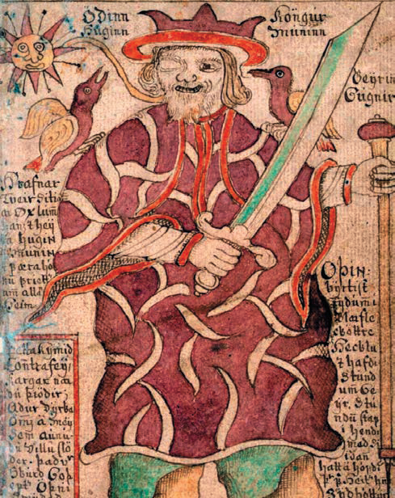
En torno a su nombre —progenitor del linaje de los Velsungos[17]— se desarrollan los temas de la cosmogonía escandinava, la genealogía de los héroes, el bullicio de la densamente poblada mitología escandinava de hadas, gnomos, gigantes, sirenas y dragones. La epopeya heroica «Edda menor», «Edda mayor», la «Saga de los Velsungos» es para la Europa del Norte lo mismo que la poesía épica de Homero para el Mediterráneo antiguo. Y los escaldos son los mismos aedos. Los druidas: la gran tribu sagrada portadora de la memoria del mundo y de la compleja experiencia de las relaciones de los hombres con el mundo de la naturaleza, entre sí y con Dios. En una palabra: son errantes, poetas con la ligera carga-lira (cítara, gusli, guitarra, arpa) en bandolera a la espalda y la gran carga de responsabilidad por la palabra ante su vocación. El tiempo de la inmortalidad, en cambio, los arrea por los caminos del espacio sin límites, es decir, carente de fronteras.
Tanto la «Edda menor» como la «Edda mayor» narran sobre el árbol del mundo, el fresno Yggdrasil. La «Edda menor» escribe: «Sus ramas se extienden sobre todo el mundo y se elevan por encima del cielo. Tres raíces sostienen el árbol y muy lejos se extienden estas raíces. Una raíz está entre los ases1, otra entre los gigantes, allí donde antes estuvo el Abismo del mundo. La tercera se extiende hacia Niflheim». La «Edda mayor» repite la descripción de Yggdrasil: «Con tres raíces / aquel árbol-fresno / brotó hacia tres lados: / bajo la primera, Hel; la segunda, hacia los hrimthurs; / la tercera, hacia el linaje de los hombres».
Odín, padre de los dioses, hijo del cielo, se sacrificó a sí mismo y se crucificó en el «árbol Yggdrasil», traspasado por su propia lanza. A cambio obtuvo el derecho a beber la miel sagrada y a transmitir esa miel a los ases y a «las gentes que saben componer versos». Así narra la «Edda menor»: «Sé que colgué[18] / en las ramas, al viento, / nueve largas noches, / traspasado por la lanza /… Nadie me dio alimento, / nadie me dio bebida, / miré hacia la tierra, / alcé las runas, / gimiendo las alcé — / y del árbol caí». Las raíces del árbol se hunden en lo desconocido, hacia el comienzo de los comienzos, hacia la incalculabilidad de los días. Por cierto, el calendario, es decir, el cómputo de los días, las «Eddas» lo vinculan asimismo con la sabiduría de Odín. Así, pues, el cómputo de los días y de los años —el número—, los signos rúnicos —la magia de la escritura— y la miel de la poesía tienen un mismo tiempo y una única fuente, en la frontera entre el sueño y la vigilia del Odín crucificado.
Odín y sus sacerdotes se llamaban «maestros del canto», y de ellos procedió este arte en los países del norte. Y cuando cantaban, sus enemigos en el combate se volvían impotentes, se llenaban de terror, y sus armas no herían más que una ramita de leña. Y a los guerreros de Odín, los cantores, nada podía dañar. Tales guerreros-cantores se llamaban «berserkers» (escaldos, aedos).[19]
Los acompañantes de Odín, su séquito, además de los poetas-guerreros, eran las doncellas guerreras. Se les llamaba valquirias, doncellas del destino: las que llevan a los guerreros desde el campo de batalla al paraíso de la inmortalidad, el Valhalla. Las valquirias son hermosas. Sus cabellos rubios envuelven los yelmos, y sus ojos de una vividez azul tan intensa que es difícil describirla. Una de tales valquirias se llamaba Brunilda, y con ella está vinculada la muerte del gran guerrero Sigurd o Sigfrido, el vencedor del Dragón.
A semejanza de Aquiles, Sigfrido era invulnerable, con excepción de un único punto: la escápula derecha, a la que se adhirió una hoja de arce[20] mientras Sigfrido tomaba el baño de sangre del Dragón que él mismo había matado. La escápula era su «talón de Aquiles». ¡Oh, las mujeres! El secreto de Sigfrido solo lo conocía su esposa Gudrun. Después, en la saga heroica del «Oro del Rin»[21], comienza una historia digna de las querellas en el Olimpo o en la «Ilíada». Historias de celos, de vanidad, de maldad, de traición, de amor. «El mejor de todos era el rey Sigurd: / ¡mis hermanos / lo dieron muerte!», gime Gudrun, sin recordar que fue ella quien reveló su secreto a la celosa Brunilda y a los hermanos envidiosos. Más le valiera guardar la lengua tras los dientes.
A mediados del siglo XVII fue hallada una copia en pergamino[22] de los cantares de la «Edda mayor», como escrita en el siglo XIII. Más bien «transcrita» en el siglo XIII a partir de cantares escáldicos existentes en la tradición oral. La adopción del cristianismo y las tradiciones cristianas se entretejen con la antigua mitología nórdica. Así, las piedras rúnicas erigidas en el siglo XI se coronan con la imagen de Cristo. Y la versión completa del «Cantar de los Nibelungos», registrada en los siglos XII–XIII, ordenada en cierta unidad poética, es una epopeya heroica con el velo de las ideas cristianas. (Beowulf. Edda mayor. Cantar de los Nibelungos. Moscú, 1975. Artículos introductorios de L. Y. Gurévich. Traducción de A. I. Korsún)
La saga del «Anillo del Nibelungo» aflora de nuevo, suscitando interés por la cultura medieval, en la investigación y en la poesía, no menor que las excavaciones de Heinrich Schliemann en el siglo XIX. Fue un acontecimiento la publicación, en 1835, de la investigación fundamental de Jacob Grimm «Mitología alemana». Y las puestas en escena que le siguieron, de 1854 a 1874[23], es decir, a lo largo de 20 años, de las cuatro óperas de Richard Wagner del «Anillo del Nibelungo»: «El oro del Rin», «La valquiria», «Sigfrido» y «El ocaso de los dioses».
Todo el siglo XIX está apasionado por la Antigüedad, por sus ideas, su arte, su poesía. La arqueología hace literalmente estallar la cultura con su evidencia. Se crean museos y colecciones de arte antiguo. Al mismo tiempo, con no menor entusiasmo, el siglo XIX recibe, sobre la ola del romanticismo, el mundo misterioso de la mitología y de la poesía medievales europeas. Clasicismo y romanticismo viven juntos, en un complejo entrelazamiento de la Antigüedad con la epopeya heroica románico-gótica de los «Nibelungos», del «Cantar de Roldán» y del «Rey Arturo», etc.
Quisiéramos recordar también el poema heroico-lírico ruso «Cantar de las huestes de Ígor», en la versión del poeta Vasili Zhukovski, edición de 1824. La autenticidad de los textos del poema suscitó no pocas disputas. Pero esta cuestión la dejamos fuera. El poema es auténtico. Según los testimonios, fue escrito hacia 1185 y narraba la historia trágica de la campaña del príncipe Ígor Sviatoslávich contra los polovtsianos, apenas cincuenta años antes del comienzo de la invasión mongola de la Rus. ¡Y qué prodigio! Cómo, por su construcción externa, recuerda a la «Ilíada». El poema tiene como dos autores: un historiador objetivo y un viejo poeta. El historiador polemiza con el cantor llamado Boián. Boián «el vidente», hijo de Veles (Odín).[24] «Oh Boián —se le dirige nuestro objetivo historiador—, ruiseñor del tiempo antiguo: si hubieras cantado estas huestes, habrías remontado con la mente bajo las nubes, trenzando las palabras en torno a nuestro tiempo, elevándote por la senda de Troyán desde los campos hasta las montañas…» Pero nuestro objetivo testigo-documentalista no puede vencer a Boián y, aun así, tuerce hacia la «senda de Troyán». El papel de Andrómaca lo interpreta la esposa del príncipe Ígor, Yaroslavna. «Insomnio… Homero». ¿Por qué caminos tan misteriosos la Rus del siglo XII «se empapa» de la matriz universal de Homero? Viene al mundo un hombre y desvía para siempre las agujas de la cultura, de la imagen, del estilo, convirtiéndose en frontera en la historia de la conciencia cultural. El autor del «Cantar» es tan anónimo como los autores precedentes. Contemos convencionalmente que es uno de los escaldos-bardos-cantores, desde cuya voz se narra. El siglo XII es notable para Europa, para el mundo entero. Es explosión, quiebra, ideas nuevas, Cruzadas. Un cambio de rumbo no menos global que la época del Renacimiento. Pero detalladamente del siglo XII y de los héroes de aquel tiempo hablaremos en su momento y en otra sección. Ahora solo mencionamos aquellos nuevos valores espirituales a los que estaba destinado un largo camino hacia el futuro y cuyas raíces del árbol ya habían brotado mil quinientos años antes del «Cantar». Llamamos a este tiempo (del siglo XII a. C. al siglo XII d. C.) el camino de formación de la conciencia nueva, para la cual el alfabeto, la palabra, el teatro, la imagen y la música constituyen un nuevo texto continuo de la cultura.
Volviendo al «Cantar», quisiéramos recordar además que, semejante a la cuadrología operística wagneriana de los «Nibelungos», casi al mismo tiempo, el gran compositor ruso Borodin escribe la ópera «El príncipe Ígor». La ópera es el «gran estilo», la gran forma, donde la palabra, los diálogos de las geniales fuentes originarias, suelen ser simplificados por libretistas muy débiles, y toda la responsabilidad de la dramaturgia la asume la música de Wagner, de Verdi, de Chaikovski, de Mussorgski, de Borodin.
En el siglo XI, en el sur de Francia, en Provenza, en Aquitania, surge (no se ha inventado otra palabra) —surge, como si se autogenerara— una nueva tradición cultural, a la vez tan vieja como la creación: la poesía lírica y heroica, acompañada de acompañamiento musical.
Los poetas escribían ellos mismos los textos, la música, y ellos mismos los ejecutaban, errando de castillo en castillo o partiendo a Oriente bajo las banderas de los templarios-cruzados. Y aquellos poetas se llamaban trovadores, y su poesía, cortés. Por cierto, cuán significativo que el significado literal de la palabra «trovador» sea «el que halla lo nuevo». Acompañaban sus relatos o los desbordes del alma tocando algo semejante a un arpa, una viola o un laúd.
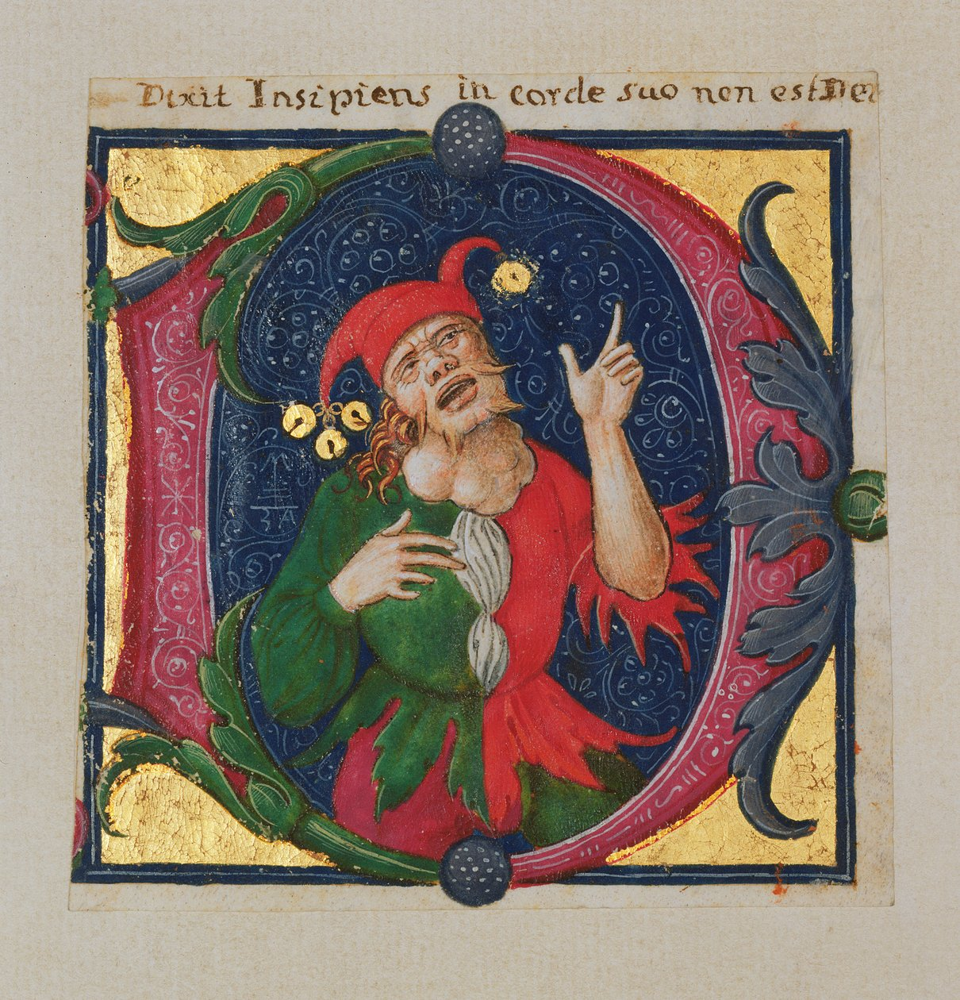
Los trovadores contaban historias diversas: heroicas, militares, sobre héroes como Roldán, el Cid, San-Cyr conde de Toulouse, o Raimbaut de Orange[25], o el conde Hugo, sobre vencedores de dragones, de sarracenos y de otros infieles, y de santos. Contaban también chismes a modo de baladas: quién duerme con quién, quién de qué padece, cuántos bienes tiene cada cual. Espiaban un poquito. Pero lo principal, lo nuevo de lo que fueron creadores, es la lírica amorosa, es el culto nuevo. El culto de la Dama Bella. Surgió bajo la influencia del benedictino san Bernardo de Claraval.[26] María, Madre de Dios, se unió, en la teología espiritual del catolicismo, al culto platónico de la Dama Bella. Aparecida ante nosotros en los siglos XI–XII, la nueva Mariología no abandonó ya nunca las tablas de la historia cultural europea, hasta el siglo XX. En Rusia su cantor fue el poeta Aleksandr Blok. Todo ello recuerda a la princesa Uta, arrebujada en su manto en el portal de la catedral de Braunburgo[27]. Ella mira a lo lejos: ¿no vendrá acaso su esposo, el caballero Eckart?
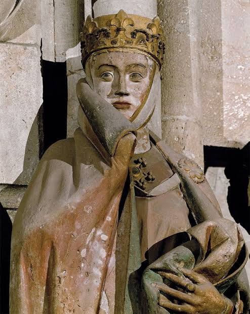
Por ahora digamos solo a grandes rasgos de los poetas-trovadores: historiadores, errantes, desesperados aventureros sin futuro y sin pasado, gentes del origen más abigarrado, desde aristócratas hasta plebeyos.
A las historias de los albigenses-trovadores, de los minnesänger, están dedicadas muchas investigaciones. El autor de una de ellas, «Historia de los albigenses», Napoleón Peyrat, escribe: «A semejanza de Grecia, Aquitania comenzó con la poesía. En Aquitania, como en la Hélade, la fuente de la inspiración poética se hallaba en las cimas de las montañas cubiertas de nubes» (Historia de los albigenses, Moscú, 1992, pp. 47 y 51).
Y así se cierra el círculo de la continuidad de la tradición homérica de aedos-trovadores, regresando en espiral a sus propios órdenes, pues también en la lírica de la Europa medieval vemos sombras de la epopeya heroica y oímos los sonidos de cuerdas de las cítaras.
El caballero Bertran de Born fue guerrero y participante de la 2.ª Cruzada.[28]
* * *
* * *
La carencia de hogar, la de incluso un rey, en aquel siglo de poesía y de sangre, de la Dama Bella, de las expediciones tras el Sepulcro del Señor y del nuevo conocimiento.
¡Querida! Mi corazón vive —
en el tormento del apasionado ímpetu —
porque la luz del amor imperecedero
veo yo en vuestros ojos.
Y sin vos soy miserable polvo.
¡Ay!
Aimeric de Peguilhan
De algún modo se conjuntó que en 1894 el filósofo alemán Friedrich Nietzsche[29] escribió el ensayo-filosófico de investigación que tituló «El nacimiento de la tragedia a partir del espíritu de la música. Prólogo a Wagner».
Nietzsche: la culminación de la tradición clásica de la filosofía europea. Murió, simbólicamente, en 1900, en la frontera del éxodo de la tradición clásica del pensamiento. El nombre de Wagner se conjuró misteriosamente, en su obra, con la Antigüedad. Los comienzos, con los acordes finales.
«… la canción popular tiene, ante todo, para nosotros el significado de un espejo musical del mundo, de la melodía primigenia que busca ahora su fenómeno paralelo en el ensueño y expresa este último en la poesía».
Según Nietzsche, el espejo musical del mundo, expresado a través de la poesía, es algo principal, como primofundamento del ser cultural. Y se expresa mediante dos nombres-conceptos de la mitología grecorromana, la música de las esferas y la pasión de la tierra: Apolo y Dioniso.
Recordamos cómo las bacantes-ménades despedazaron a Orfeo por su puro servicio a Apolo, y cómo las musas de Apolo castigaron a Tamiris.
La lucha de Apolo y de Dioniso en la naturaleza de la cultura, no solo antigua sino también contemporánea: «¿Quién vence a quién: Apolo a Dioniso o Dioniso a Apolo?», gritaba en su salón poético, la «Torre», Viacheslav Ivánov en 1913[30], enfrentando a Nikolái Gumiliov con Maximilián Voloshin, donde a Voloshin, por supuesto, le estaba reservado el lugar de Dioniso.
Entre Apolo y Dioniso; entre la razón luminosa, la disciplina, la palabra, y la intuición, las emociones; entre la luminosidad victoriosa y la tragicidad del Dioniso despedazado; entre el néctar de los olímpicos y el zumo de la vid. La tradición homérica, continua a través de toda la cultura europea, aúna la poética de la palabra con los inquietantes sonidos de las cítaras y de las arpas eólicas, de Dioniso y de Apolo.
Desde uno de los portales de la catedral de San Demetrio en Vladímir[31], decorada con talla de piedra blanca en el siglo XII, nos mira un cantor. Está sentado en un trono, su cabeza está coronada, viste toga. Canta, acompañándose con el arpa. Suele llamársele con el nombre del rey bíblico David, autor del «Salterio». Dicen que caía en éxtasis durante la ejecución de los salmos por él escritos. De su canto florecen las hierbas, los árboles, las flores inclinan la cabeza, lo escuchan las aves. Todo el mundo creado atiende al cantor. Pero si no supiéramos su nombre, podríamos decir: es la imagen de un cantor-poeta, su imagen colectiva y universal, fuera del tiempo. La ubicación del bajorrelieve en el muro del templo es tal que, por así decirlo, repetimos el ritual de comunicación entre Orfeo —o David, u Homero— y el mundo entero que lo rodea. Nosotros también atendemos, mirándolo. Y él canta sobre lo Principal, mirándonos a nosotros y a lo lejos que hay tras nosotros. Y en torno ruge, se transforma la vida, y solo él, en medio del mundo bajo el cielo estrellado, para siempre. «Insomnio… Homero».
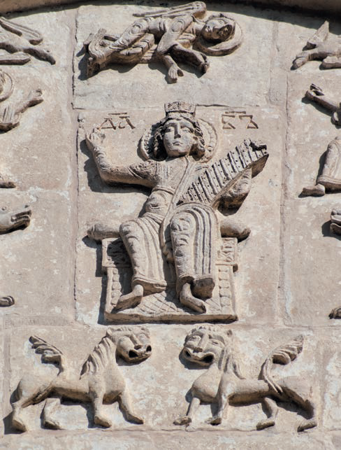
Notas
1. Los ases son históricamente oriundos de la Grecia de Asia Menor.[32] Odín es un ase, como narra la «Saga de los Velsungos». Así, la raíz antiguo-mitológica o histórica de Homero y de Odín es una sola.
Notas del editor
[1] El título del capítulo, «Бессонница… Гомер…», procede del primer verso del poema de Osip Mandelstam «Бессонница. Гомер. Тугие паруса…» (1915).
[2] Es una datación tradicional (la de Heródoto, II, 53). Hoy la mayoría de los especialistas sitúa la composición de los poemas en la segunda mitad del siglo VIII a. C. o a comienzos del VII. La puesta por escrito en el siglo VI alude a la llamada «recensión pisistrátida», que es también una tradición discutida.
[3] La despedida de Héctor y Andrómaca está en el canto VI de la Ilíada (vv. 441–465). No ocurre antes del duelo con Aquiles, que se narra en el canto XXII, sino cuando Héctor vuelve al combate en general.
[4] El cuadro de David es de 1783 (el índice de láminas dice 1782). Fue su pieza de ingreso en la Academia: clasicismo de finales del siglo XVIII, no de comienzos del XIX.
[5] Dión de Prusa, llamado Crisóstomo, vivió hacia 40–115 d. C., bajo Vespasiano, Domiciano, Nerva y Trajano, no bajo Augusto (muerto en el 14 d. C.). El discurso citado es el Troyano (Discurso XI).
[6] La tradición atribuye a Anténor la fundación de Patavium (Padua), no la de Venecia, que surge en la Alta Edad Media.
[7] Tolstói fue excomulgado en 1901 por el Santo Sínodo, no por Juan de Kronstadt. Juan de Kronstadt fue uno de sus críticos más duros, pero no tenía autoridad para excomulgarlo.
[8] Mozart fue enterrado en una «tumba común» (allgemeines einfaches Grab) conforme a las normas funerarias de José II, que eran las habituales para la clase media vienesa. No era una fosa de pobres.
[9] Platónov vivió desde 1931 en el ala lateral de la Casa Herzen, sede del Instituto Literario. La imagen de Platónov barriendo el patio como conserje es una leyenda muy difundida, sin respaldo documental.
[10] Según la documentación, William Shakespeare nació en Stratford-upon-Avon (bautizado en 1564) y está enterrado en la iglesia de la Santísima Trinidad de esa ciudad. La afirmación de la autora se sitúa en la línea antiestratfordiana (véase el cap. 1).
[11] Según el Himno homérico a Hermes, lo que Hermes construye es la lira (chélys), con siete cuerdas de tripa de oveja, y se la regala a Apolo. La cítara es un instrumento distinto, de caja de madera. En el mito, además, Orfeo desciende al Hades solo; Hermes aparece como guía de las almas en el relieve de Orfeo, Eurídice y Hermes.
[12] Así lo transmite Ateneo (I, 20f): en el Támiris Sófocles tocaba la cítara en escena. La lámina de los actores se ha colocado aquí por esta alusión al oficio del actor.
[13] El padre de Shakespeare, John, era guantero; la leyenda del «carnicero» procede de John Aubrey (siglo XVII). «Lord Redcliffe» es casi seguro un error de transcripción por «lord Rutland» (en ruso, Рэтленд), el candidato antiestratfordiano del que habla el capítulo 1. Conviene cotejarlo con el original.
[14] Francisco de Asís (1181/82–1226) pertenece sobre todo al siglo XIII. Tampoco escribió las Florecillas (Fioretti): es una compilación anónima del siglo XIV. Obra suya es, en cambio, el Cántico de las criaturas.
[15] César (Guerra de las Galias, VI, 13–14) describe a los druidas, no a los bardos. A los bardos los mencionan Diodoro Sículo (V, 31) y Estrabón (IV, 4, 4).
[16] Se trata del escaldo noruego Eyvindr skáldaspillir (siglo X). Su apodo suele traducirse «el plagiario» o «el que echa a perder a los escaldos», no «el Destrozador». «Ströd» es probablemente Stord, la isla donde se libró la batalla de Fitjar (hacia 961).
[17] En español es más usual «Volsungos» (nórdico antiguo Völsungar).
[18] Estos versos no pertenecen a la Edda menor (la prosa de Snorri), sino al Hávamál (estr. 138–139), que forma parte de la Edda mayor o poética.
[19] Los berserkers no eran cantores. Eran guerreros que combatían en trance furioso, y la Saga de los Ynglingos (cap. 6) los describe como los hombres de Odín que luchaban sin coraza. El poder de los cantos se atribuye allí a Odín, no a ellos. Identificarlos con escaldos y aedos es una asociación de la autora.
[20] En el Cantar de los Nibelungos (estr. 902) la hoja que cae sobre Sigfrido es de tilo, y el punto vulnerable queda entre los omóplatos. Allí es Crimilda quien revela el secreto a Hagen, no Gudrun a Brunilda. La autora mezcla la tradición nórdica (Sigurd, Gudrun) con la alemana (Sigfrido, Crimilda).
[21] El oro del Rin es el título de la primera ópera de la tetralogía de Wagner, no el de una saga medieval.
[22] El Codex Regius de la Edda poética lo encontró el obispo Brynjólfur Sveinsson en 1643. Se fecha hacia 1270.
[23] Esas fechas corresponden a la composición del Anillo (el texto, desde 1848; la música, de 1853–1854 a 1874). Las óperas se estrenaron más tarde: El oro del Rin en 1869, La valquiria en 1870, y el ciclo completo en Bayreuth en 1876.
[24] El Cantar llama a Boián «nieto de Veles» («Велесовъ внуче»). La identificación de Veles, dios eslavo del ganado y quizá de la poesía, con Odín es de la autora.
[25] «San-Cyr» parece una deformación de Saint-Gilles: Raimundo de Saint-Gilles, conde de Tolosa y caudillo de la Primera Cruzada. Raimbaut d’Orange fue un trovador, no un héroe épico; el héroe de los cantares de gesta es Guillaume d’Orange.
[26] Bernardo de Claraval fue cisterciense, orden reformada que había salido de los benedictinos. Su influencia en el nacimiento de la lírica trovadoresca es discutible: Guillermo IX de Aquitania, el primer trovador conocido, murió en 1126, cuando Bernardo apenas empezaba su obra.
[27] Se trata de la catedral de Naumburgo, y la estatua de Uta no está en un portal, sino en el coro occidental, junto a la de su esposo, el margrave Ekkehard II de Meissen. Es de hacia 1250, más de dos siglos posterior a los personajes.
[28] Bertran de Born (hacia 1140–hacia 1215) no participó en la Segunda Cruzada (1147–1149). Escribió poemas sobre la Tercera, pero no hay constancia de que tomara parte en ella. El segundo fragmento es su llanto (planh) por la muerte de Enrique el Joven (1183).
[29] El nacimiento de la tragedia es de 1872. Lo que la autora llama «Prólogo a Wagner» es el prefacio dedicado a Wagner («Vorwort an Richard Wagner») con que se abre el libro.
[30] Las reuniones de la «Torre» de Ivánov duraron de 1905 a 1912. El famoso enfrentamiento entre Gumiliov y Voloshin fue un duelo real, en 1909, por el caso Cherubina de Gabriak.
[31] El relieve del rey David está en el centro de los arcos superiores (zakomaras) de las fachadas, no en un portal. La catedral es de 1194–1197.
[32] (A la nota 1 de la autora.) Esta idea procede del prólogo de la Edda menor, donde Snorri Sturluson, según la interpretación evemerista de su época, hace venir a los ases de Troya («Asgard»). No es un dato histórico. En la Saga de los Volsungos Odín aparece como antepasado del linaje, sin referencia a Asia Menor.